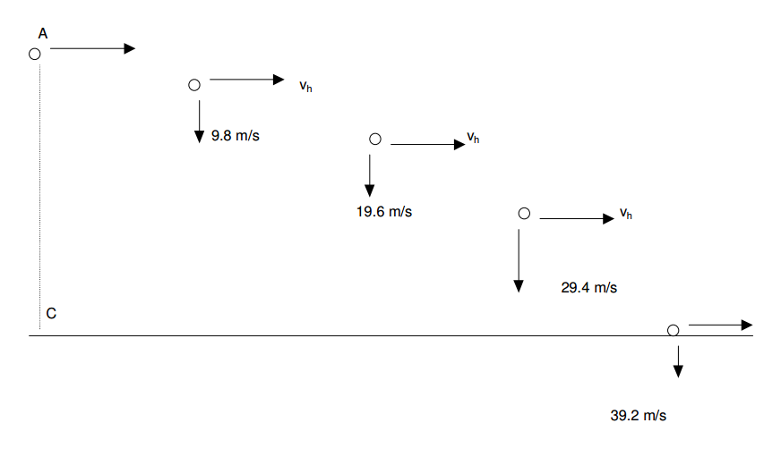
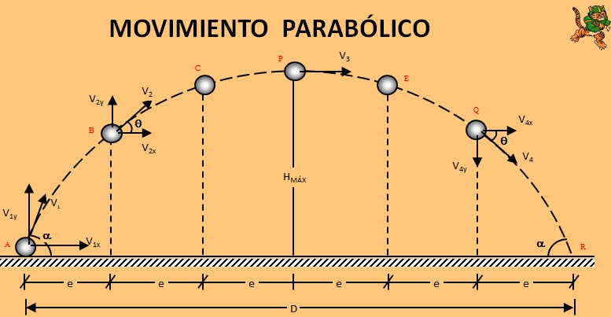
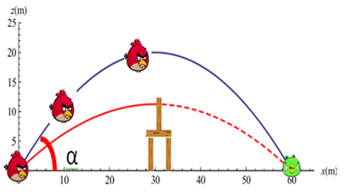
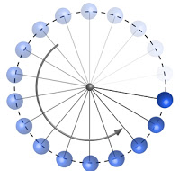

Movimiento Curvilíneo
Tiro horizontal
Combinación de MRU y caída libre
La velocidad en "x" sigue constante, mientras que la velocidad en y comienza en 0 y aumenta con el tiempo

Movimiento Horizontal "x"
$$v_{x} = \frac{x}{t}$$
donde:
$$x = \ alcance \ horizontal \ en \ m$$
Movimiento Vertical "y"
$$v_{\text{fy}} = gt$$ $$y = \frac{1}{2}gt^{2}$$ $$v_{\text{fy}}^{2} = 2gy$$
Donde:
$$y = es\ la\ altura\ en\ metros$$
Una pelota rueda sobre una mesa horizontal a 1.5 m de altura del suelo, cayendo por el borde de la misma. Si choca con el suelo a una distancia de 1.8m medidos horizontalmente desde el borde de la mesa, ¿con qué velocidad salió de la mesa?
Movimiento parabólico
Combinación de MRU a lo largo del eje "x" y MCUA en el eje "y" cuya aceleración es -g


Dirección en el eje x
$$x = v_{0x}t$$ $$v_{x} = v_{0x}$$
Direccion en el eje y
$$v_{y} = v_{0y} - gt$$ $$v_{y}^{2} = v_{0y}^{2} - 2gy$$ $$y = v_{0y}t - \frac{gt^{2}}{2}$$
Ley de velocidades
$$v = \left( v_{0}\cos\theta \right)i + \left( v_{0}\sin{\theta - gt} \right)j$$
Ley de Posiciones
$$d = \left( v_{0}\cos\theta t \right)i + \left( v_{0}\sin\theta t - \frac{1}{2}gt^{2} \right)j$$
Altura Máxima
$$y_{\max} = \frac{v_{0y}^{2}}{2g} = \frac{\left( v_{0}\sin\theta \right)^{2}}{2g}$$
Alcance horizontal
$$x_{\max} = \frac{2v_{0x}v_{0y}}{g} = \frac{v_{0}^{2}\sin{2\theta}}{g}$$
Tiempo de subida
$$t_{s} = \frac{v_{0y}}{g}$$
Tiempo de vuelo
$$T = t_{v} = 2t_{s}$$
Un beisbolista golpea la pelota con una velocidad de 120 km/h, formando un ángulo de 60º con la horizontal. Determinar la altura máxima y la distancia horizontal alcanzada por la pelota
MCU
El cuerpo describe un circulo al rededor de un punto fijo central llamado eje de rotación

Velocidad angular
Representa el cociente entre el valor del desplazamiento angular y el tiempo que tarda en efectuarlo
$$\omega = \frac{\theta}{t}$$ $$\omega = \frac{v}{r}$$ $$\omega = 2\pi f$$
Donde:
$$\omega = \ valor \ de \ la \ velocidad \ angular \ en \ \frac{\text{rad}}{s}$$ $$\theta = \ desplazamiento \ angular \ en \ rad$$ $$v = \ velocidad \ lineal \ en \ \frac{m}{s}$$ $$r = \ radio \ de \ giro \ en \ m$$ $$f = \ frecuencia$$
Período
Es el tiempo que tarda un cuerpo en dar una vuelta completa o en completar un ciclo